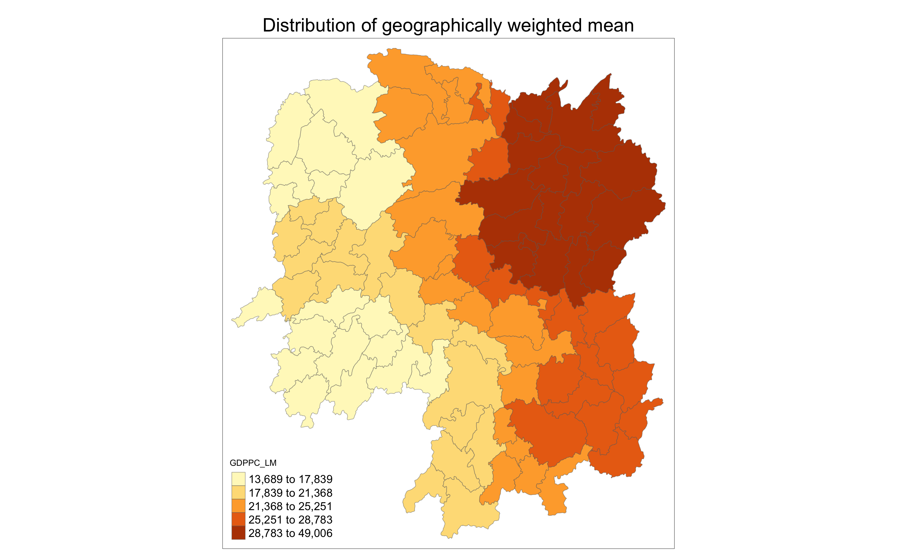
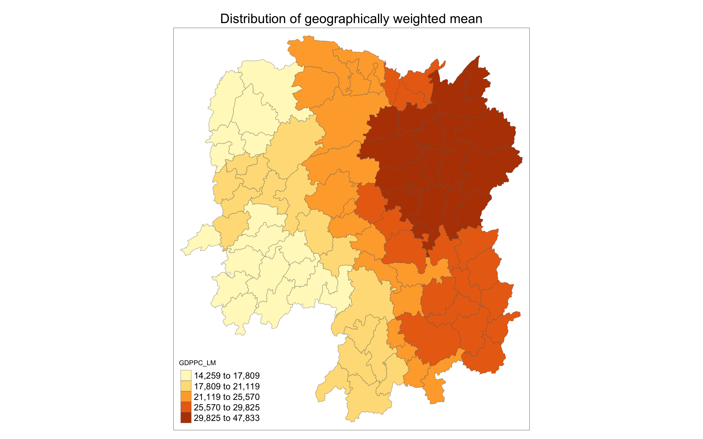
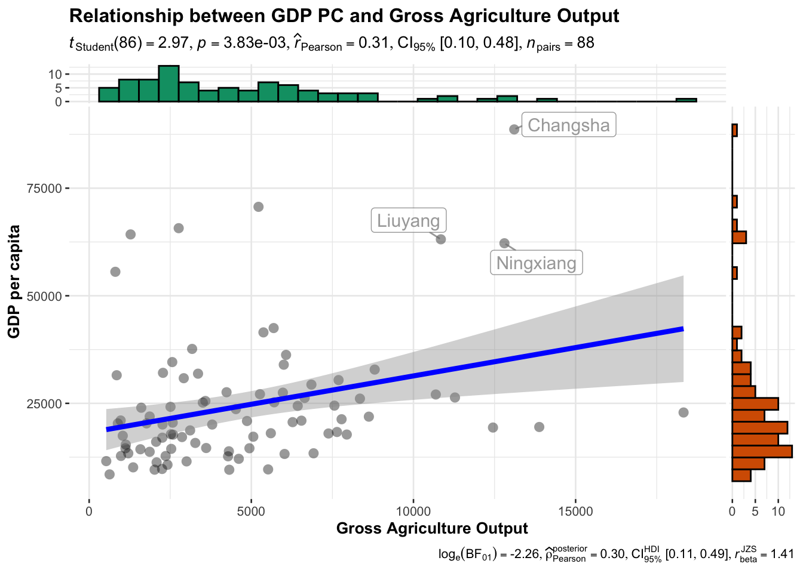
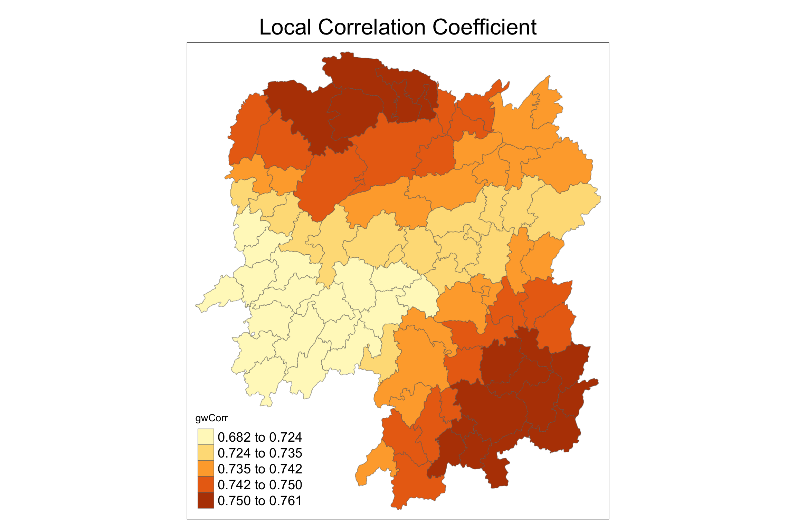
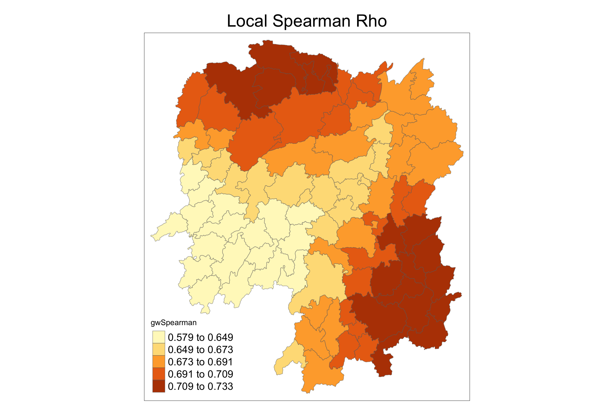

pacman::p_load(sf, ggstatsplot, spdep, tmap, tidyverse, knitr, GWmodel)In-Class Exercise 4
#todo
1 Exercise Reference
2 Overview
In this session, we will learn about Geographically-Weighted Models.
Geographically weighted regression (GWR) is a spatial analysis technique that takes non-stationary variables into consideration (e.g., climate; demographic factors; physical environment characteristics) and models the local relationships between these predictors and an outcome of interest.
GWR is an outgrowth of ordinary least squares regression (OLS) see more: Geographically Weighted Regression | Columbia University Mailman School of Public Health
Note
GWModel is under active development. It supports many features such as GW discriminant analysis, GW PCA, regression models and so on.
GWM is distance-based and does not support adjacency matrices.
3 Learning Outcome
- Review techniques to merge geospatial and aspatial datasets using dplyr functions like
left_join(), covered in Hands-on Exercise. - Convert spatial data from sf to sp format for compatibility with the GWmodel package.
- Compute geographically weighted summary statistics with adaptive and fixed bandwidth using GWmodel.
- Visualize geographically weighted summary statistics using tmap.
4 Import the R Packages
The following R packages will be used in this exercise:
| Package | Purpose | Use Case in Exercise |
|---|---|---|
| sf | Handles spatial data; imports, manages, and processes vector-based geospatial data. | Importing and managing geospatial data, such as Hunan’s county boundary shapefile. |
| GWmodel | Provides functions for geographically weighted regression and summary statistics. | Computing geographically weighted summary statistics using adaptive and fixed bandwidth methods. |
| tidyverse | A collection of R packages for data science tasks like data manipulation, visualization, and modeling. | Wrangling aspatial data and joining with spatial datasets. |
| tmap | Creates static and interactive thematic maps using cartographic quality elements. | Visualizing geographically weighted summary statistics and creating thematic maps. |
| ggstatsplot | Enhances plots with statistical details and facilitates data visualization. | Statistical graphics for analysis, comparison, and visualization of summary statistics. |
| knitr | Enables dynamic report generation and integration of R code with documents. | Formatting output and generating reports for the exercise. |
To install and load these packages, use the following code:
5 The Data
The following datasets will be used in this exercise:
| Data Set | Description | Format |
|---|---|---|
| Hunan County Boundary Layer | A geospatial dataset containing Hunan’s county boundaries. | ESRI Shapefile |
| Hunan_2012.csv | A CSV file containing selected local development indicators for Hunan in 2012. | CSV |
hunan_sf <- st_read(dsn = "data/geospatial",
layer = "Hunan")Reading layer `Hunan' from data source
`/Users/walter/code/isss626/isss626-gaa/In-class_Ex/In-class_Ex04/data/geospatial'
using driver `ESRI Shapefile'
Simple feature collection with 88 features and 7 fields
Geometry type: POLYGON
Dimension: XY
Bounding box: xmin: 108.7831 ymin: 24.6342 xmax: 114.2544 ymax: 30.12812
Geodetic CRS: WGS 84
Tip
For admin boundaries, we will typically encounter polygon or multipolygon data objects.
A polygon represents a single contiguous area, while a multipolygon consists of multiple disjoint areas grouped together (e.g., islands that belong to the same admin region).
hunan2012 <- read_csv("data/aspatial/Hunan_2012.csv")
glimpse(hunan2012)Rows: 88
Columns: 29
$ County <chr> "Anhua", "Anren", "Anxiang", "Baojing", "Chaling", "Changn…
$ City <chr> "Yiyang", "Chenzhou", "Changde", "Hunan West", "Zhuzhou", …
$ avg_wage <dbl> 30544, 28058, 31935, 30843, 31251, 28518, 54540, 28597, 33…
$ deposite <dbl> 10967.0, 4598.9, 5517.2, 2250.0, 8241.4, 10860.0, 24332.0,…
$ FAI <dbl> 6831.7, 6386.1, 3541.0, 1005.4, 6508.4, 7920.0, 33624.0, 1…
$ Gov_Rev <dbl> 456.72, 220.57, 243.64, 192.59, 620.19, 769.86, 5350.00, 1…
$ Gov_Exp <dbl> 2703.0, 1454.7, 1779.5, 1379.1, 1947.0, 2631.6, 7885.5, 11…
$ GDP <dbl> 13225.0, 4941.2, 12482.0, 4087.9, 11585.0, 19886.0, 88009.…
$ GDPPC <dbl> 14567, 12761, 23667, 14563, 20078, 24418, 88656, 10132, 17…
$ GIO <dbl> 9276.90, 4189.20, 5108.90, 3623.50, 9157.70, 37392.00, 513…
$ Loan <dbl> 3954.90, 2555.30, 2806.90, 1253.70, 4287.40, 4242.80, 4053…
$ NIPCR <dbl> 3528.3, 3271.8, 7693.7, 4191.3, 3887.7, 9528.0, 17070.0, 3…
$ Bed <dbl> 2718, 970, 1931, 927, 1449, 3605, 3310, 582, 2170, 2179, 1…
$ Emp <dbl> 494.310, 290.820, 336.390, 195.170, 330.290, 548.610, 670.…
$ EmpR <dbl> 441.4, 255.4, 270.5, 145.6, 299.0, 415.1, 452.0, 127.6, 21…
$ EmpRT <dbl> 338.0, 99.4, 205.9, 116.4, 154.0, 273.7, 219.4, 94.4, 174.…
$ Pri_Stu <dbl> 54.175, 33.171, 19.584, 19.249, 33.906, 81.831, 59.151, 18…
$ Sec_Stu <dbl> 32.830, 17.505, 17.819, 11.831, 20.548, 44.485, 39.685, 7.…
$ Household <dbl> 290.4, 104.6, 148.1, 73.2, 148.7, 211.2, 300.3, 76.1, 139.…
$ Household_R <dbl> 234.5, 121.9, 135.4, 69.9, 139.4, 211.7, 248.4, 59.6, 110.…
$ NOIP <dbl> 101, 34, 53, 18, 106, 115, 214, 17, 55, 70, 44, 84, 74, 17…
$ Pop_R <dbl> 670.3, 243.2, 346.0, 184.1, 301.6, 448.2, 475.1, 189.6, 31…
$ RSCG <dbl> 5760.60, 2386.40, 3957.90, 768.04, 4009.50, 5220.40, 22604…
$ Pop_T <dbl> 910.8, 388.7, 528.3, 281.3, 578.4, 816.3, 998.6, 256.7, 45…
$ Agri <dbl> 4942.253, 2357.764, 4524.410, 1118.561, 3793.550, 6430.782…
$ Service <dbl> 5414.5, 3814.1, 14100.0, 541.8, 5444.0, 13074.6, 17726.6, …
$ Disp_Inc <dbl> 12373, 16072, 16610, 13455, 20461, 20868, 183252, 12379, 1…
$ RORP <dbl> 0.7359464, 0.6256753, 0.6549309, 0.6544614, 0.5214385, 0.5…
$ ROREmp <dbl> 0.8929619, 0.8782065, 0.8041262, 0.7460163, 0.9052651, 0.7…
Note
Recall that to do left join, we need a common identifier between the 2 data objects. The content must be the same eg. same format and same case. In Hands-on Exercise 1B, we need to (PA, SZ) in the dataset to uppercase before we can join the data.
hunan_sf <- left_join(hunan_sf, hunan2012) %>%
select(1:3, 7, 15, 16, 31, 32)
hunan_sfSimple feature collection with 88 features and 8 fields
Geometry type: POLYGON
Dimension: XY
Bounding box: xmin: 108.7831 ymin: 24.6342 xmax: 114.2544 ymax: 30.12812
Geodetic CRS: WGS 84
First 10 features:
NAME_2 ID_3 NAME_3 County GDPPC GIO Agri Service
1 Changde 21098 Anxiang Anxiang 23667 5108.9 4524.410 14100.0
2 Changde 21100 Hanshou Hanshou 20981 13491.0 6545.350 17727.0
3 Changde 21101 Jinshi Jinshi 34592 10935.0 2562.460 7525.0
4 Changde 21102 Li Li 24473 18402.0 7562.340 53160.0
5 Changde 21103 Linli Linli 25554 8214.0 3583.910 7031.0
6 Changde 21104 Shimen Shimen 27137 17795.0 5266.510 6981.0
7 Changsha 21109 Liuyang Liuyang 63118 99254.0 10844.470 26617.8
8 Changsha 21110 Ningxiang Ningxiang 62202 114145.0 12804.480 18447.7
9 Changsha 21111 Wangcheng Wangcheng 70666 148976.0 5222.356 6648.6
10 Chenzhou 21112 Anren Anren 12761 4189.2 2357.764 3814.1
geometry
1 POLYGON ((112.0625 29.75523...
2 POLYGON ((112.2288 29.11684...
3 POLYGON ((111.8927 29.6013,...
4 POLYGON ((111.3731 29.94649...
5 POLYGON ((111.6324 29.76288...
6 POLYGON ((110.8825 30.11675...
7 POLYGON ((113.9905 28.5682,...
8 POLYGON ((112.7181 28.38299...
9 POLYGON ((112.7914 28.52688...
10 POLYGON ((113.1757 26.82734...6 Mapping GDPPC
To plot a chrolopleth map of geographic distribution of GDP per Capita (GDPPC) in Hunan:
basemap <- tm_shape(hunan_sf) +
tm_polygons() +
tm_text("NAME_3", size=0.5)
gdppc <- qtm(hunan_sf, "GDPPC")
tmap_arrange(basemap, gdppc, asp=1, ncol=2)
7 Converting to SpatialPolygonDataFrame
Note
GWmodel presently is built around the older sp and not sf formats for handling spatial data in R.
hunan_sp <- hunan_sf %>%
as_Spatial()8 Geographically Weighted Summary Statistics with Adaptive Bandwidths
In this section, we aim to determine the optimal adaptive bandwidth for performing Geographically Weighted Regression (GWR). Specifically, we are interested in finding the best bandwidth to use for summarizing the spatial variation in GDP per capita (GDPPC) across the Hunan region.
8.1 Determine Adaptive Bandwidth
An adaptive bandwidth allows the number of neighbors considered in the model to vary depending on the density of data points. This is particularly useful when data points are unevenly distributed across the study area.
We will use two different criteria—cross-validation (CV) and Akaike information criterion to determine the optimal bandwidth.
The bandwidth that minimizes these metrics will be selected.
8.1.1 Cross Validation
bw_CV<- bw.gwr(GDPPC ~ 1,
data = hunan_sp,
approach= "CV",
adaptive = TRUE,
kernel = "bisquare",
longlat = T) # great circle distanceAdaptive bandwidth: 62 CV score: 15515442343
Adaptive bandwidth: 46 CV score: 14937956887
Adaptive bandwidth: 36 CV score: 14408561608
Adaptive bandwidth: 29 CV score: 14198527496
Adaptive bandwidth: 26 CV score: 13898800611
Adaptive bandwidth: 22 CV score: 13662299974
Adaptive bandwidth: 22 CV score: 13662299974 bw_CV[1] 228.1.2 Akaike Information Criterion (AIC)
Next, we use the AIC approach to determine the optimal bandwidth. AIC is a model selection criterion that balances model fit and complexity, with a lower AIC value indicating a better model.
We use the same GWR model setup, but the bandwidth is now optimized based on the AIC value instead of cross-validation.
bw_AIC<- bw.gwr(GDPPC ~ 1,
data = hunan_sp,
approach= "AIC",
adaptive = TRUE,
kernel = "bisquare",
longlat = T)Adaptive bandwidth (number of nearest neighbours): 62 AICc value: 1923.156
Adaptive bandwidth (number of nearest neighbours): 46 AICc value: 1920.469
Adaptive bandwidth (number of nearest neighbours): 36 AICc value: 1917.324
Adaptive bandwidth (number of nearest neighbours): 29 AICc value: 1916.661
Adaptive bandwidth (number of nearest neighbours): 26 AICc value: 1914.897
Adaptive bandwidth (number of nearest neighbours): 22 AICc value: 1914.045
Adaptive bandwidth (number of nearest neighbours): 22 AICc value: 1914.045 bw_AIC[1] 22
Note
Intepretation
The output from these 2 methods indicate the number of nearest neighbour we should choose. In this case, both methods produce the same result: 22 nearest neighbours.
Sometimes the result may differ, and either methods is acceptable for further analysis.
9 Geographically Weighted Summary Statistics with adaptive bandwidth
To compute Geographically Weighted Summary Statistics:
gwstat <- gwss (data = hunan_sp,
vars = "GDPPC",
bw = bw_AIC,
kernel = "bisquare",
adaptive = TRUE,
longlat = T)
Note
We use bw_AIC as the bandwidth parameter, which was determined previously based on AIC optimization.
Additionally, we apply the same bisquare kernel for consistency with the CV and AIC computation above.
The output of the gwss() function is a gwss object, which is a list containing localized summary statistics for GDPPC across Hunan.
Note that the abbreviation in the output refers to:
LM : local mean
LSD: local standard deviation
LVar: local variance
LSKe: standard estimations
LCV: local correlation variance
9.1 Preparing the output data
Let’s observe the gwstat object before converting to a suitable format for analysis.
class(gwstat)[1] "gwss"gwstat ***********************************************************************
* Package GWmodel *
***********************************************************************
***********************Calibration information*************************
Local summary statistics calculated for variables:
GDPPC
Number of summary points: 88
Kernel function: bisquare
Summary points: the same locations as observations are used.
Adaptive bandwidth: 22 (number of nearest neighbours)
Distance metric: Great Circle distance metric is used.
************************Local Summary Statistics:**********************
Summary information for Local means:
GDPPC_LM
Min. 1st Qu. Median 3rd Qu. Max.
13688.70 17995.43 23408.07 27865.12 49005.84
Summary information for local standard deviation :
GDPPC_LSD
Min. 1st Qu. Median 3rd Qu. Max.
4282.599 6297.788 8281.756 16315.028 22568.841
Summary information for local variance :
GDPPC_LVar
Min. 1st Qu. Median 3rd Qu. Max.
18340656 39662960 68633859 266187788 509352591
Summary information for Local skewness:
GDPPC_LSKe
Min. 1st Qu. Median 3rd Qu. Max.
-0.2150599 0.9900027 1.3714638 1.8387524 3.7525953
Summary information for localized coefficient of variation:
GDPPC_LCV
Min. 1st Qu. Median 3rd Qu. Max.
0.2000503 0.3107774 0.3829294 0.5129959 0.8018153
************************************************************************gwstat$SDFclass : SpatialPolygonsDataFrame
features : 88
extent : 108.7831, 114.2544, 24.6342, 30.12812 (xmin, xmax, ymin, ymax)
crs : +proj=longlat +datum=WGS84 +no_defs
variables : 5
names : GDPPC_LM, GDPPC_LSD, GDPPC_LVar, GDPPC_LSKe, GDPPC_LCV
min values : 13688.6986033259, 4282.59917616925, 18340655.7037255, -0.215059890053627, 0.200050258645349
max values : 49005.8382943034, 22568.8411539952, 509352591.034267, 3.7525953469342, 0.801815253056722 In particular, we are interested to extract the SDF data table from gwstat. We can convert it into a data frame and append it onto hunan_sf.
gwstat_df <- as.data.frame(gwstat$SDF)
hunan_gstat <- cbind(hunan_sf, gwstat_df)9.2 Visualising geographically weighted summary statistics
tm_shape(hunan_gstat) +
tm_fill("GDPPC_LM",
n = 5,
style = "quantile") +
tm_borders(alpha = 0.5) +
tm_layout(main.title = "Distribution of geographically weighted mean",
main.title.position = "center",
main.title.size = 2.0,
legend.text.size = 1.2,
legend.height = 1.50,
legend.width = 1.50,
frame = TRUE)
10 Geographically Weighted Summary Statistics with Fixed Bandwidth
Similarly, we can use the same process to generate summary stats with fixed bandwidth.
10.1 Determine Fixed Bandwidth
- Cross-Validation
bw_CV_fixed <- bw.gwr(GDPPC ~ 1,
data = hunan_sp,
approach = "CV",
adaptive = FALSE,
kernel = "bisquare",
longlat = T)Fixed bandwidth: 357.4897 CV score: 16265191728
Fixed bandwidth: 220.985 CV score: 14954930931
Fixed bandwidth: 136.6204 CV score: 14134185837
Fixed bandwidth: 84.48025 CV score: 13693362460
Fixed bandwidth: 52.25585 CV score: Inf
Fixed bandwidth: 104.396 CV score: 13891052305
Fixed bandwidth: 72.17162 CV score: 13577893677
Fixed bandwidth: 64.56447 CV score: 14681160609
Fixed bandwidth: 76.8731 CV score: 13444716890
Fixed bandwidth: 79.77877 CV score: 13503296834
Fixed bandwidth: 75.07729 CV score: 13452450771
Fixed bandwidth: 77.98296 CV score: 13457916138
Fixed bandwidth: 76.18716 CV score: 13442911302
Fixed bandwidth: 75.76323 CV score: 13444600639
Fixed bandwidth: 76.44916 CV score: 13442994078
Fixed bandwidth: 76.02523 CV score: 13443285248
Fixed bandwidth: 76.28724 CV score: 13442844774
Fixed bandwidth: 76.34909 CV score: 13442864995
Fixed bandwidth: 76.24901 CV score: 13442855596
Fixed bandwidth: 76.31086 CV score: 13442847019
Fixed bandwidth: 76.27264 CV score: 13442846793
Fixed bandwidth: 76.29626 CV score: 13442844829
Fixed bandwidth: 76.28166 CV score: 13442845238
Fixed bandwidth: 76.29068 CV score: 13442844678
Fixed bandwidth: 76.29281 CV score: 13442844691
Fixed bandwidth: 76.28937 CV score: 13442844698
Fixed bandwidth: 76.2915 CV score: 13442844676
Fixed bandwidth: 76.292 CV score: 13442844679
Fixed bandwidth: 76.29119 CV score: 13442844676
Fixed bandwidth: 76.29099 CV score: 13442844676
Fixed bandwidth: 76.29131 CV score: 13442844676
Fixed bandwidth: 76.29138 CV score: 13442844676
Fixed bandwidth: 76.29126 CV score: 13442844676
Fixed bandwidth: 76.29123 CV score: 13442844676 bw_CV_fixed[1] 76.29126- AIC
bw_AIC_fixed <- bw.gwr(GDPPC ~ 1,
data = hunan_sp,
approach ="AIC",
adaptive = FALSE,
kernel = "bisquare",
longlat = T)Fixed bandwidth: 357.4897 AICc value: 1927.631
Fixed bandwidth: 220.985 AICc value: 1921.547
Fixed bandwidth: 136.6204 AICc value: 1919.993
Fixed bandwidth: 84.48025 AICc value: 1940.603
Fixed bandwidth: 168.8448 AICc value: 1919.457
Fixed bandwidth: 188.7606 AICc value: 1920.007
Fixed bandwidth: 156.5362 AICc value: 1919.41
Fixed bandwidth: 148.929 AICc value: 1919.527
Fixed bandwidth: 161.2377 AICc value: 1919.392
Fixed bandwidth: 164.1433 AICc value: 1919.403
Fixed bandwidth: 159.4419 AICc value: 1919.393
Fixed bandwidth: 162.3475 AICc value: 1919.394
Fixed bandwidth: 160.5517 AICc value: 1919.391 bw_AIC_fixed[1] 160.5517
Note
Note the results differs this time.
We will just use bw_AIC_fixed for this example.
gwstat_fixed <- gwss(data = hunan_sp,
vars = "GDPPC",
bw = bw_AIC_fixed,
kernel = "bisquare",
adaptive = FALSE,
longlat = T)10.2 Preparing the output data
gwstat_df_fixed <- as.data.frame(gwstat_fixed$SDF)
hunan_gstat_fixed <- cbind(hunan_sf, gwstat_df_fixed)10.3 Visualising geographically weighted summary statistics
tm_shape(hunan_gstat_fixed) +
tm_fill("GDPPC_LM",
n = 5,
style = "quantile") +
tm_borders(alpha = 0.5) +
tm_layout(main.title = "Distribution of geographically weighted mean",
main.title.position = "center",
main.title.size = 1.8,
legend.text.size = 1.2,
legend.height = 1.50,
legend.width = 1.50,
frame = TRUE)
11 Visualizing Correlation
Business question: Is there any relationship between GDP per capita and Gross Industry Output?
ggscatterstats(
data = hunan2012,
x = Agri,
y = GDPPC,
xlab = "Gross Agriculture Output",
ylab = "GDP per capita",
label.var = County,
label.expression = Agri > 10000 & GDPPC > 50000,
point.label.args = list(alpha = 0.7, size = 4, color = "grey50"),
xfill = "#CC79A7",
yfill = "#009E73",
title = "Relationship between GDP PC and Gross Agriculture Output")
Note
Note that above shows a conventional statistical solution to the business question. We can also approach the same question with a geospatial approach.
12 Geographically Weighted Correlation with Adaptive Bandwidth
To come up with the geospatial analytics solution, we can repeat what we have learnt above.
# determine bandwidth
bw <- bw.gwr(GDPPC ~ GIO,
data = hunan_sp,
approach = "AICc",
adaptive = TRUE)Adaptive bandwidth (number of nearest neighbours): 62 AICc value: 1870.235
Adaptive bandwidth (number of nearest neighbours): 46 AICc value: 1870.852
Adaptive bandwidth (number of nearest neighbours): 72 AICc value: 1869.744
Adaptive bandwidth (number of nearest neighbours): 78 AICc value: 1869.713
Adaptive bandwidth (number of nearest neighbours): 82 AICc value: 1869.604
Adaptive bandwidth (number of nearest neighbours): 84 AICc value: 1869.537
Adaptive bandwidth (number of nearest neighbours): 86 AICc value: 1869.647
Adaptive bandwidth (number of nearest neighbours): 83 AICc value: 1869.567
Adaptive bandwidth (number of nearest neighbours): 84 AICc value: 1869.537 # compute gwCorrelation
gwstats <- gwss(hunan_sp,
vars = c("GDPPC", "GIO"),
bw = bw,
kernel = "bisquare",
adaptive = TRUE,
longlat = T)
gwstats$SDFclass : SpatialPolygonsDataFrame
features : 88
extent : 108.7831, 114.2544, 24.6342, 30.12812 (xmin, xmax, ymin, ymax)
crs : +proj=longlat +datum=WGS84 +no_defs
variables : 13
names : GDPPC_LM, GIO_LM, GDPPC_LSD, GIO_LSD, GDPPC_LVar, GIO_LVar, GDPPC_LSKe, GIO_LSKe, GDPPC_LCV, GIO_LCV, Cov_GDPPC.GIO, Corr_GDPPC.GIO, Spearman_rho_GDPPC.GIO
min values : 19131.1142970311, 10893.8161299979, 10277.2097869105, 14522.4178379531, 105621041.00417, 210900619.860099, 1.48323193793682, 2.0736607949458, 0.536791980126491, 1.00164110576375, 103845165.127288, 0.68232363208861, 0.57886543894541
max values : 30957.9353099472, 31000.8255210838, 17996.8393335404, 31051.7011545276, 323886225.997265, 964208144.590089, 2.90892414233837, 5.17918131636017, 0.648888935893182, 1.46498918439505, 417614864.583691, 0.760623282755834, 0.73344304557923 # convert result to df
gwstat_df <- as.data.frame(gwstats$SDF) %>%
# select(c(12,13)) %>%
select(c("Corr_GDPPC.GIO","Spearman_rho_GDPPC.GIO")) %>%
rename(gwCorr = Corr_GDPPC.GIO,
gwSpearman = Spearman_rho_GDPPC.GIO)
hunan_Corr <- cbind(hunan_sf, gwstat_df)
hunan_CorrSimple feature collection with 88 features and 10 fields
Geometry type: POLYGON
Dimension: XY
Bounding box: xmin: 108.7831 ymin: 24.6342 xmax: 114.2544 ymax: 30.12812
Geodetic CRS: WGS 84
First 10 features:
NAME_2 ID_3 NAME_3 County GDPPC GIO Agri Service
1 Changde 21098 Anxiang Anxiang 23667 5108.9 4524.410 14100.0
2 Changde 21100 Hanshou Hanshou 20981 13491.0 6545.350 17727.0
3 Changde 21101 Jinshi Jinshi 34592 10935.0 2562.460 7525.0
4 Changde 21102 Li Li 24473 18402.0 7562.340 53160.0
5 Changde 21103 Linli Linli 25554 8214.0 3583.910 7031.0
6 Changde 21104 Shimen Shimen 27137 17795.0 5266.510 6981.0
7 Changsha 21109 Liuyang Liuyang 63118 99254.0 10844.470 26617.8
8 Changsha 21110 Ningxiang Ningxiang 62202 114145.0 12804.480 18447.7
9 Changsha 21111 Wangcheng Wangcheng 70666 148976.0 5222.356 6648.6
10 Chenzhou 21112 Anren Anren 12761 4189.2 2357.764 3814.1
gwCorr gwSpearman geometry
1 0.7486038 0.7052022 POLYGON ((112.0625 29.75523...
2 0.7444358 0.6931584 POLYGON ((112.2288 29.11684...
3 0.7506001 0.7106856 POLYGON ((111.8927 29.6013,...
4 0.7529990 0.7175096 POLYGON ((111.3731 29.94649...
5 0.7521408 0.7147542 POLYGON ((111.6324 29.76288...
6 0.7546843 0.7224617 POLYGON ((110.8825 30.11675...
7 0.7332991 0.6800127 POLYGON ((113.9905 28.5682,...
8 0.7305758 0.6608931 POLYGON ((112.7181 28.38299...
9 0.7341173 0.6716514 POLYGON ((112.7914 28.52688...
10 0.7520181 0.7236245 POLYGON ((113.1757 26.82734...12.1 Visualizing Local Correlation
- Local Correlation Coefficient
tm_shape(hunan_Corr) +
tm_fill("gwCorr",
n = 5,
style = "quantile") +
tm_borders(alpha = 0.5) +
tm_layout(main.title = "Local Correlation Coefficient",
main.title.position = "center",
main.title.size = 2.0,
legend.text.size = 1.2,
legend.height = 1.50,
legend.width = 1.50,
frame = TRUE)
Note
Interpretation
- The strongest correlations are found in the eastern and northern parts of the province, indicated by the darker shades.
- The weaker correlations are located in the central and western areas, where the lighter colors predominate.
- Local Spearman Coefficient
Note that we will observe similar trend using Local Spearman Coefficient. See notes below.
tm_shape(hunan_Corr) +
tm_fill("gwSpearman",
n = 5,
style = "quantile") +
tm_borders(alpha = 0.5) +
tm_layout(main.title = "Local Spearman Rho",
main.title.position = "center",
main.title.size = 2.0,
legend.text.size = 1.2,
legend.height = 1.50,
legend.width = 1.50,
frame = TRUE)
Tip
Notes on local correlation coefficient and the local Spearman coefficient:
- Local Correlation Coefficient (Pearson)
- Type: Parametric
- The local correlation coefficient, often represented by Pearson’s correlation coefficient, assumes that the data follows a normal distribution.
- Nature: Continuous
- It measures the linear relationship between two continuous variables.
- Type of Measure: Not Ranked
- The Pearson correlation is sensitive to the actual values of the data points, not their ranks. It considers both the magnitude and direction of the linear relationship.
- Local Spearman Coefficient
- Type: Non-Parametric
- The local Spearman coefficient is a rank-based measure and does not assume any specific distribution for the data. It is robust to non-normality.
- Nature: Continuous (based on ranks)
- Although it works with ranks, the coefficient itself can take any continuous value between -1 and 1, like Pearson’s.
- Type of Measure: Ranked
- The Spearman correlation is based on the ranks of the data rather than their actual values. It measures the strength and direction of a monotonic relationship between two variables.